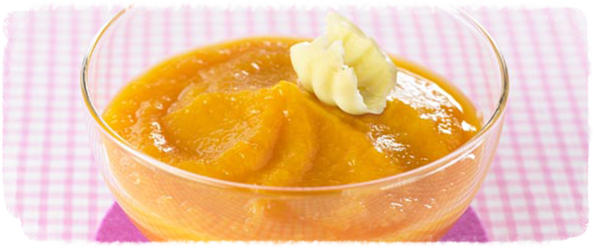

Agneau aux petits legumes et pomme de terre

Difficultes
Facile
Preparation
20 minutes
Temps de cuisson
20 minutes
Repas
Dejeuner
Ingredients :
Pour 1 portion
| 10 a 30g d agneau | 70g de brocolis | 1 noisette de beurre |
| 70g de pomme de terre | 1c a cafe d un melange d huiles colza et tournseol par exemple | |
| 70g de carotte |
| 10 a 30g d agneau |
| 70g de brocolis |
| 1 noisette de beurre |
| 70g de pomme de terre |
| 1c a cafe d un melange d huiles colza et tournseol par exemple |
| 70g de carotte |
Preparation :
- Lavez, epluchez, coupez la pomme de terre et la carotte
- Lavez et coupez les fleurettes de brocolis
- Faites cuire le tout à la vapeur
- Faites cuire la viande a la poele sans coloration et mixez la
- Mixez le brocolis et la carotte separement en ajoutant dans chaque puree le melange d huiles et la moitie des morceaux de la pomme de terre
- Dans l assiette de bebe, disposez les deux purees et la viande mixee en trois tas differents pour obtenir un plat colore
- Servez a bebe